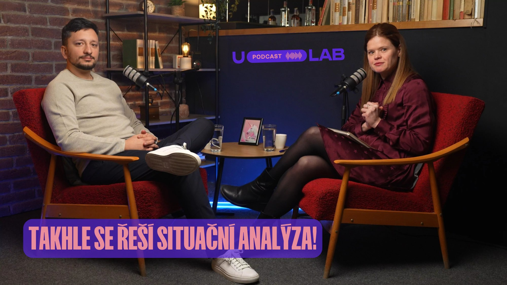

01
Money
Kde a proč investujeme. Cílem není šetřit, ale alokovat spend tak, aby vytvářel signál — ne kliknutí.
Marketing Strategist · Growth Partner
Pomáhám firmám propojit brand, performance a poznatky o lidském chování do jediné strategie — té, která přináší růst dnes i za pět let.
Většina firem řeší marketing jako sérii taktik. Kampaň tady, social media tam, retargeting. Výsledek? Spousta aktivity, málo růstu. Problém není v exekuci — je ve strategii, která za tím stojí.
Evidence-based marketing vychází z jednoduchého principu: nejprve porozumět, pak rozhodnout. Ne podle pocitu, ne podle toho, co dělá konkurence. Podle dat, výzkumu zákaznického chování a kauzální logiky.
Pokud nedokážete vysvětlit, jak váš marketing funguje, pravděpodobně nefunguje.
Každá koruna investovaná do marketingu má svoji roli. Šest kroků, které propojují rozpočet s výsledkem — od signálu až po ovládnutí kategorie.
Kde a proč investujeme. Cílem není šetřit, ale alokovat spend tak, aby vytvářel signál — ne kliknutí.
Jaký signál vysíláme do trhu. Reklama musí být viděna a zapamatována — jinak se zbytek řetězce nikdy nerozjede.
Jaké chování chceme vyvolat. Zákazník si vzpomene na značku v správnou chvíli — a následně jedná.
Jak marketing reálně pomáhá obchodu. Synchronizace marketingu a sales = více kvalitních leadů, vyšší MQL.
Jak se zlepšuje efektivita. Marketing snižuje náklady na obchod tím, že zvyšuje kvalitu leadů — ne objem.
Jak značka ovládá kategorii. Rosteme s trhem, nebo proti němu? Share of Brand Search, Share of Market.
Tento framework není teorie. Je to mapa, podle které analyzuji každý byznys. Každý krok je měřitelný. Každé rozhodnutí je zdůvodněnitelné.
Firmy si volí jedno, nebo druhé. Výsledkem je buď krásná značka bez prodejů, nebo rychlé akvizice bez budoucího růstu. Skutečný growth je ve správném poměru obojího.
Problém: brand bez performance je výdaj bez návratnosti.
Problém: performance bez brandu je sprint bez cíle.
Case studies, rozhovory a podcasty o přístupu, který přináší měřitelný růst.

Jak krmivo-brit.cz dosáhl trojciferného meziročního růstu za 6 měsíců navzdory stagnujícímu trhu s pet-food — přes CEP mapping, behaviorální vědu a efektivní alokaci rozpočtu.

Jak přechod z výkonnostního marketingu na vyvážený brand+performance mix zvýšil prodeje Showmaxu o 97 % a snížil cenu za akvizici o 67 % — za pouhých šest měsíců.

Podcast o tom, jak správně uchopit situační analýzu před každou marketingovou strategií. Co zjistit, jak to strukturovat a proč je analýza základem každého dobrého rozhodnutí.
Každý případ stojí na stejném základě: pochopení problému, hypotéza, test, škálování.
Stagnující tržby při rostoucím CAC. Firma optimalizovala kampaně, ale ignorovala zákaznické chování a mediální mix.
Restrukturalizace funnelu, nový mediální mix založený na CEPs, zavedení atribučního modelu. Přesun části rozpočtu z konverzí do brand budování.
Skvělý produkt. Nejasné sdělení, nulový positioning, nízká konverze z trialu. Prodejní tým bez jasného ICP.
Behaviorální výzkum, redefinice ICP, nový positioning, redesign onboardingu. Propojení marketingu s obchodem přes shared metrics.
Značka uvězněná v race to the bottom. Eroze marže, zákazníci odcházeli ke konkurenci při sebemenší slevě.
Mapování CEPs, repositioning mimo cenovou dimenzi, kampaň cílená na mentální dostupnost v klíčových situacích nákupu.
Jsem co-CEO & Strategy Director v agentuře Pickerly.com, kde se vedle budování TOP Class marketingové agentury zaměřuji na marketingové strategie založené na datech a behaviorální vědě pro naše klienty.
Marketing pro mě není o kampaních ani o metrikách. Je o tom, jak systematicky řídit růst byznysu. Ve své práci proto řeším, jak správně kombinovat brand a performance, jak číst chování zákazníků v datech a jak řídit marketingové investice tak, aby měly reálný dopad.
Marketingu se věnuji od roku 2013. Pracoval jsem na projektech napříč e-commerce, retailem, B2B, SaaS i službami. Profesně jsem začínal v Seznam.cz, následně jsem vedl digitální komunikaci pro řetězec Albert a později působil v agenturách Marketup a Proficio, kde jsem zastával role od stratéga až po vedení pražské pobočky.
Každá spolupráce začíná hlubokým pochopením vašeho byznysu. Žádné šablony. Žádná copy-paste řešení.
Komplexní marketingová strategie propojující brand a performance. Vychází z dat, zákaznického výzkumu a analýzy kategorie. Výsledkem je akční plán — ne prezentace plná buzzwordů.
Výstup: Strategie, která obstojí pod tlakem CFO i CMO.
Hluboký výzkum zákazníků, kategorie a konkurence. CEP mapping, segmentace, positioning audit. Kombinace kvantitativních a kvalitativních metod.
Výstup: Jasný obraz toho, jak vás trh vidí a kde jsou příležitosti.
Dlouhodobé strategické partnerství pro firmy, které chtějí mít interní marketing rozhodující se na základě dat. Pracuji s vedením jako sparring partner.
Výstup: Marketing, který roste spolu s firmou.
Intenzivní workshop pro marketingové a obchodní týmy. Aplikace M→S→B→S→E→C frameworku na váš konkrétní byznys. Praktický, provokativní, zaměřený na výsledek.
Výstup: Tým, který myšlí strategicky a rozhoduje se na základě dat.
Přijímám nové klienty průběžně, ale kapacita je omezená. První rozhovor je vždy zdarma.